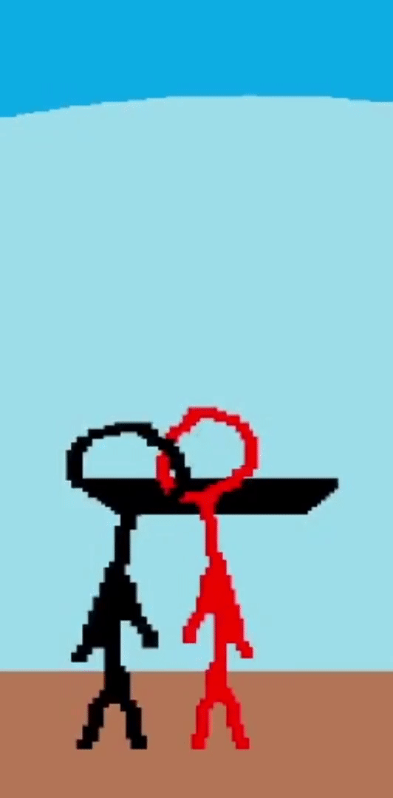
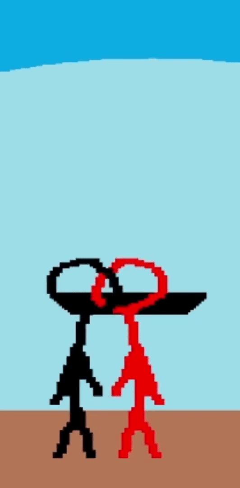
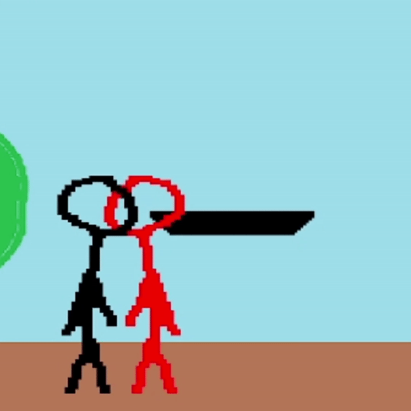

{% extends 'base.html' %}
{% block title %}Platforms{% endblock %}
{% block content %}
Platforms
Platforms interactions
Platforms permit anyone to stand on them and to have access to all their grounded options while on one, however, there is more nuance to this mechanic.
Firstly, platforms can be hit and destroyed.
Hitting them with a move will behave just like when you hit a character (except the platform won't move) and if you destroy one after inflicting 2000 damage to it, it will disapear and enter a 900 fames cool down befor reappearing.
Secondly, you can go through a platform by maintaining down at any point, if you're in the air and are going to land on a platform, or pressing down two times if already on a platform.
You can do this even while doing a move or being in hitstun, but you can't do it while knocked down or teching.
 
Not pressing down/2 Pressing down/2
Falling tech
The last special interaction involving platform is when someone is knocked down on a platform.
While being knocked down on a platform is mostly the same as being knocked down on the ground, there is one thing that changes.
If the platform is destroyed while you are knocked down or teching, or, if you fall from the platform while teching (if you go too far during your directional tech or if you're pushed from the platform while neutral teching for example) you will enter the falling tech state.
The falling tech state is a very dangerous state to be in, as you are not actionable and completely vulnerable during it, this state will linger as long as you're falling.

{% endblock %}